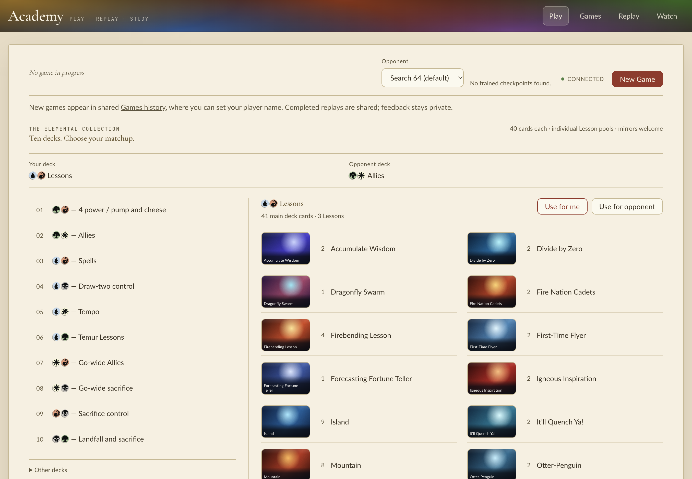
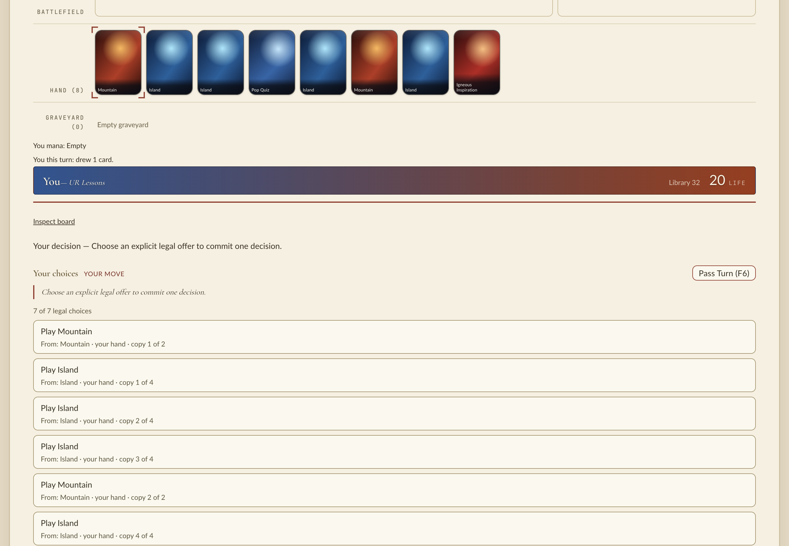

2026-11-11, macOS arm64, branch head 7a84cbdad plus the uncommitted verifier change. I used the change as its two audiences would: an outside project installing the Manabot wheel, and a developer running Academy from a checkout. I fixed nothing in the product. The only fix was a validation command in the notes.
Ran the release preparation path: prepare.py → sdist (--no-sources), then a wheel from that sdist for 3.13 and for 3.12.
validated 2 wheels and one source archive for 0.2.0 Checking manabot-0.2.0-cp312-cp312-macosx_11_0_arm64.whl: PASSED Checking manabot-0.2.0-cp313-cp313-macosx_11_0_arm64.whl: PASSED Checking manabot-0.2.0.tar.gz: PASSED Requires-Python: >=3.12, <3.14 Requires-Dist: torch>=2.10.0 ; sys_platform == 'linux' Requires-Dist: torch>=2.10.0 ; sys_platform != 'linux' Requires-Dist: etude-sdk>=0.2.15 Requires-Dist: etude-sdk[eval]>=0.2.15 ; extra == 'evaluation' Requires-Dist: etude-sdk[s3]>=0.2.15 ; extra == 'reports'
This closes the gap from the earlier notes: the 3.12 wheel now comes from the current metadata. Artifacts: .runs/mtg271/qa/dist/.
Each interpreter got a fresh /tmp directory with PYTHONPATH unset. (a) A venv at the declared minimums, torch==2.10.0 and etude-sdk==0.2.15, running the release smoke: imports, native alias, catalog binding, gradients, CLI, bounded CPU training and checkpoint reload. (b) An ordinary uv init project with uv add "manabot[academy,reports,artifacts,evaluation,notebook,llm,openrouter] @ file://…whl" and no pins.
release smoke passed: Python 3.13.7, manabot 0.2.0, torch 2.10.0, etude-sdk 0.2.15
release smoke passed: Python 3.12.12, manabot 0.2.0, torch 2.10.0, etude-sdk 0.2.15
# uv project, latest resolution (torch 2.15.0, etude-sdk 0.2.15, nbformat 5.11.1)
extras import ok …/app/.venv/lib/python3.1{2,3}/site-packages/manabot/managym/__init__.py
usage: cards.py [-h] {evaluate,data,audit,export-log,verify} ...
release smoke passed: Python 3.13.7, manabot 0.2.0, torch 2.15.0, etude-sdk 0.2.15
release smoke passed: Python 3.12.12, manabot 0.2.0, torch 2.15.0, etude-sdk 0.2.15
All installed packages are compatible
Logs: .runs/mtg271/qa/consumer3.1{2,3}.log.
| What they do | What they see |
|---|---|
| Install the cp313 wheel into 3.12 | hint: The wheel is compatible with CPython 3.13 (`cp313`), but you're using CPython 3.12 |
Pin torch==2.9.1 next to Manabot | Resolution fails with "all versions of manabot depend on torch>=2.10.0 … your requirements are unsatisfiable" |
Python 3.14, resolving from an index (--find-links) | Rejected without trying a build |
| Python 3.14, sdist passed by path | uv skips the Requires-Python check for a direct path and starts building, then fails: "the configured Python interpreter version (3.14) is newer than PyO3's maximum supported version (3.13)". The message is clear, but it only appears after a slow build. That behavior belongs to uv and is outside this change. |
./scripts/play)ACADEMY_PLAY_READY {… "native": {"abi": "cp313", "module": ".../manabot/managym/_managym.cpython-313-darwin.so"}, "python": "3.13.7", "elapsed_ms": 6825.6 …}
I opened the table, started a game against Search 64 (UR Lessons vs GW Allies), played an Island and passed the turn. The bot played its turn and control came back with legal choices. The browser logged no console errors. SIGINT shut down both servers cleanly.


./scripts/verify-clean-machine)I copied the tracked and untracked files into an empty /tmp/qa271-clone, so it had no .venv, node_modules, target or extension.
manabot/managym/_managym.cpython-313-darwin.so planted, the verifier refused: ACADEMY_CLEAN_PROOF_ERROR {"code":"proof.dirty","message":"a managym native extension exists before the clean proof"}. That is the uncommitted fix, and it left nothing behind.result: pass, elapsed_to_playable_ms 70470 against a 90000 budget, launcher on Python 3.13.7 / cp313, browser proof including reload and a post-reload action. No processes were left on the ports.uv run --isolated --extra dev --extra artifacts pytest tests/training/test_artifact_storage.py tests/training/test_etude_sdk.py tests/training/test_etude_source.py tests/training/test_etude_job.py -q 31 passed uv run --extra dev --extra notebook --extra artifacts --extra reports --extra llm pytest tests/test_package_boundaries.py tests/training/test_regimes.py tests/academy/test_clean_machine_verifier.py -q 30 passed
Fixed: the notes gave the acceptance command with only dev and artifacts. Run that way, 5 regime tests fail importing matplotlib, because experiment reports need the reports extra. CI already uses the full extras, which is the command above, and matplotlib ownership is unchanged from main. I corrected the command in scratch/mtg-271.md.
Works now: wheels built from the current source on 3.12 and 3.13; consumer installs at the minimums and at the latest resolution (Torch 2.15) with every extra; clear errors for a wheel/interpreter mismatch and an old Torch pin; the 3.13 developer table; the cold first-clone proof within budget; the stale-extension refusal.
Not reached: Linux x86_64 wheels and runtime, and CUDA execution. Both are left to the release workflow matrix in CI. The clean proof ran on this laptop with warm shared uv/Cargo/npm download caches, so 70.5 s is not the Ubuntu reference timing. No newer Etude SDK than 0.2.15 was available to test.
Still wrong, worst first: nothing in this change's scope. The minor point is that uv builds a sdist given by path on 3.14 before rejecting it; that is uv's behavior.